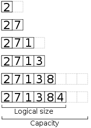
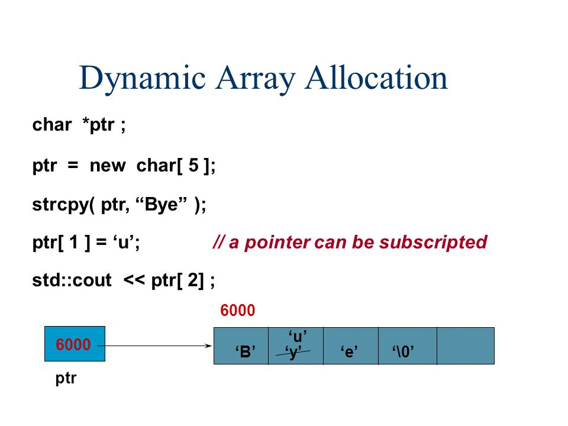

In the previous concepts, we have learned about static arrays and what are their advantages and disadvantages. Let us now quickly jump into the topic of Dynamic Arrays.
Dynamic Array is an array whose memory can be allocated during the run time.
For example, when we use a static array i.e, int count[50] only 50 blocks of integer bytes memory is allocated. Think about if there are more than 10,000 records and you are allocating only 50 integer bytes of memory. The space is not sufficient for inserting 10,000 records. Typically, you again change the size of the array which is costly operation.Hence, we quickly dive into the concept of Dynamic arrays where we can utilise the memory during run time.

The above array is an example of dynamic array. In general, the elements are inserted same as the static arrays in contiguous blocks but when the elements in the array are used till the size of an array and you want to insert a new element then the array size is extended. Generally, the array size is extended double the size of an arary. Without again resizing the array, the memory gets allocated dynamically which is less costly operation.
Dynamic memory is allocated with the “new” operator along with the data
type of the array.If we want to you use a fixed size array, then we mention
the size besides the data type which is enclosed in [ ] brackets.
If you are not well with pointers, skip gently to vectors
written below.
Prerequisite for reading below : Basic pointers
Dynamic Array using pointers:
Syntax:
<data_type pointer> <variable_name> =new <data_type>[size] (size is optional).
The example mentions that an array box is of size 5 which is allocated
dynamically and returns a pointer to the beginning of the block.
But, what if you don’t want to mention the size of an array and you are
eager to insert more and more elements then we leave the size as empty.

In the above example , “strcpy” is a function copying string to the
character array. We see that character pointer “ptr” points to intial block
element.
We can access the array elements by moving out pointer i.e If we want to
access the second element we can access it by *(ptr+1). Similary, if we
want to access the third element we can do it by *(ptr+2).
Try me!!
Vector
Vector is a dynamic array where the size of the array doesn’t grow when new elements are inserted. Instead, it allocates extra storage for the elements to be inserted. Thus, their will be also an extra space when elements are completely inserted in the arrays.
Syntax:
vector<data_type> <variable_name>
If you want to declare the size for the dynamic array and you want to initialize the array.The syntax is given below :
vector<data_type> <variable_name>([size], [element_you_initialize]);
vector<int> dyn_array;
The first example shows that it is a dynamic array of integer type with no
initialization.
Let us know about the iterators for vectors.
1.begin
-The begin iterator a points t the first element present in the vector
Syntax:
Iterator{ returning value } <vector_name>. begin()
2.end
-The end iterator points to beyond the end element in the vector
Syntax:
Iterator { returning value } <vector_name>.end()
3.rbegin
-The rbegin iterator is a reverse iterator that points to last element in the vector
Syntax:
Iterator { returning value } <vector_name>.rbegin()
4.rend
- The rend iterator points to element preceding the first element in the vector
Syntax:
Iterator { returning value } <vector_name>.rend()
Let us quickly jump into the functions present in vectors.
1.assign
-modifying the size of the vector and assigning the contents to the vector array.
-If you want to explicitly assign the size and initialization we use this assign modifier.
-Return type is none.
Syntax:
<vector_name> . assign( size, initialization );
2.push_back
-inserts an element at the end of the vector.
-Return type is none.
Syntax:
<vector_name> .push_back( element_you_insert );
3.pop_back
- removes the last element present in the vector.
-Return type is none.
Syntax:
<vector_name>.pop_back( );
4.clear
- removes all elements that are present in the vector and the size of vector becomes zero.
-Return type is none.
Syntax:
<vector_name>.clear( );
5.swap
- The elements that are present in one vector are exchanged with the elements that are present in another vector if the data type of those two vectors are same.
-Return type is none.
Syntax:
<vector_name_1>.swap(vector_name_2);
6. insert
- If you want to insert elements at a particular position, then we use insert function.
-The size of the array increases dynamically after inserting the element in the particular position.
Syntax:
1. <vector_name>.insert( iterator_position , const value_type &val);
-Returns an iterator pointer
2. <vector_name>.insert( iterator position , size_type n , const value_type &val);
-Returns none
3. <vector_name>.insert( iterator position , iterator first ,iterator last );
-Returns none
7.erase
-If you want to remove the element from the vector then we use erase function.
-Return type is the iterator pointing to the location where the last element has been removed.
Syntax:
<vector_name>.erase ( iterator position )
-Returns an iterator pointer.
2. <vector_name> .erase(iterator first , iterator last )
-Returns an iterator pointer.
8. size
- If you want to know how many elements are present in the array we use the size function
- Returns the number of elements present in the array
Syntax:
<vector_name> .size( );
9.empty
-Returns whether the vector is empty or not.
Syntax:
<vector_name>.empty( );
10.max_size
- If you want to know how many number of elements the vector holds we use the max_size function.
-Returns maximum size allocated for the vector.
Syntax:
<vector_name>.max_size( );
11.capacity
-If you want to know how much current storage is allocated for the vector we use the capacity function.
-Returns currently allocated storage for the vector.
Syntax:
<vector_name> .capacity ( );
12.resize
- If we want to change our vector size with some number ‘n’ then we use resize function.
-Returns none.
-Let us assume the size we want to change is some number ‘x’
-If ‘x’ is smaller than the current vector size ,then the vector reduces to first ‘x’ elements.
- If ‘x’ is greater than current vector size , then the vector is expanded by inserting elements at the end to reach the size of ‘x’
Syntax:
void <vector_name>.resize( size );
void <vector_name>.resize( size , element_to_be_inserted );
Output :
size of the vector v :5
size of the vector goats :10
capacity allocated for alphabets vector : 10
Elements present in the vector after insertion :a b c d
Elements present in the vector after deletion :a b
iterating through vector 'goats' using iterator
0 0 0 0 0 0 0 0 0 0
Advantages of Dynamic Arrays:
We can access any element within the array size in O(1) time complexity
Insert any number of elements in the dynamic array
We can modify any content within array size in just O(1) time complexity. As, we can access any index within the array.
Inserting and Deleting an element at the end takes O(1) time complexity
Disadvantages of Dynamic Arrays:
More memory space is used than required for the array.
Generally, Time complexity for searching an element in array is O(size_of_array).
We can optimise it,by using other searching algorithms.
Time complexity of Inserting or Deleting an element in the array except at the end is also O(size_of_array).
For getting more grip over Dynamic arrays ,try solving these problems
https://leetcode.com/problems/running-sum-of-1d-array/
https://leetcode.com/problems/kids-with-the-greatest-number-of-candies/
https://leetcode.com/problems/number-of-good-pairs/
Happy Coding 😊
By Programmers Army
Contributed by: Ravi Teja Chidurala